| 三段峡の花情報 | |
| ■ 三段峡は自然の宝庫 植物編 自然の宝庫三段峡の魅力は、①断崖絶壁が連続し、あたかも鬼神が斧やノミを使って削ったような、浸食風化作用でできた巨岩彫刻－その岩容の美しさと②水は浸食された渓谷を激流となり滝となり淵となった水態の美、そして③樹木は鬱蒼として名庭園師の手にかかったような優雅を極める木々、春から秋にかけて何百、何千という草花、樹木花が全長１６キロにもわたって咲きほころぶ林層の美しさである。 その幾つを知っているだろうか。季節に応じて学びながら写真に収めてみたい。 |
|
|
|
|
 |
ミヤマカタバミ 深山片喰 （撮影４月４日） 葉は三枚のハート形をしてくっついている。花はまだこの時期はつぼみであるが、開花すると白色でうすい青色のすじがはいっている。葉の先を片喰（かたば）んでいるようにみえるところからついた名前。繁殖力が強いから家運隆盛として家紋（片喰紋）がある。当館築山に咲いています。 |
 |
シュンラン 春蘭（撮影４月４日） 昔は、道端には多くの蘭が咲いていた。 |
 |
シュンラン 春蘭（撮影４月４日）
とても小さく見落とされるのが幸いしている。手のひらと比較してみるとその大きさがわかる。此処でなら育つが持って帰っても育たないですよ。 |
 |
イチリンソウ（撮影４月４日） 花は白く一つの茎から一輪の花が咲いているからイチリンソウ。一つの茎から二輪咲いているとニリンソウ。 |
 |
タムシバ（撮影４月４日） タムシバは遠くからみると山桜かな又コブシかなと思ってしまうが、マンサクの次に早く咲く花です。 モクレン属で花の下に葉がない。葉を噛むと甘みがあることから噛むシバ（カムシバ）がその名前の由来で香りがいいから別名ニオイコブシとも言う。 |
 |
エンレイソウ 延齢草 （撮影４月６日） 当館築山に丁度朝日を浴びて咲いている。淡い紅色の花で葉の上に座っているようにも見える。齢（よわい）を延ばす草という意味らしい。地下茎が薬用にされていたらしい。毒は毒をもって制すということかも。 |
 |
桜（撮影４月５日） 三段峡入口にも桜は咲いています。 例年このごろから綺麗ですが、ここから車で１０分寺領のソメイヨシノはスケールも大きく有名です。 |
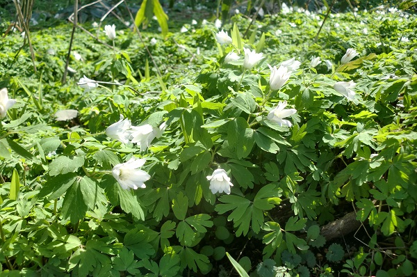 | アズマイチゲ 東一花 （撮影４月７日） 群生しているのはあの有名なところ 毎年アズマイチケゲのファンがカメラを片手に来ている。 イチゲは花一輪の意味イチリンソウににているイチリンソウをイチゲソウ（一花草）ともよぶ。 |
| 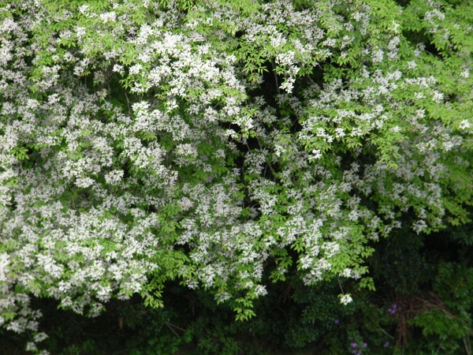 | アズキナシ小豆梨 （撮影5月11日） 当館の広間から見え、川向こうに白い花をさかせる。とても目立つ、ナナカマド属で１０メートルは十分ある。毎年見ているのだけど年々大きくなって花の輪が広がっている。 |
| 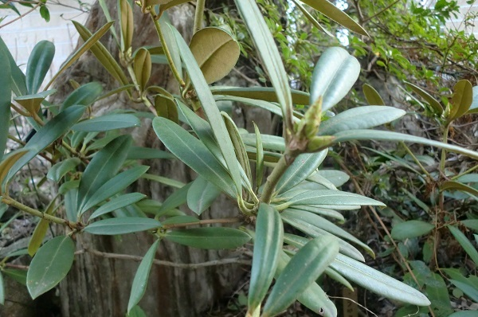 | ホンシャクナゲ 本石楠花 （撮影4月7日） 三段峡には以前随分本石楠花が咲いていた。時々見かけるが道端ではなかなか無い。当館のつき庭に咲いている石楠花で５月頃白い花を咲かせる。ツツジ科で石楠花の種類は多いい。 南峰が「春は石楠花岩ツツジ」とうたっている程当時多く咲いていたのだろう。 |
 |
イカリソウ 錨草 （撮影4月21日） 当館築山に咲いているイカリソウ。名前の由来は、花が錨の格好をしているから。三段峡渓谷内でもよく見かける。四枚の花弁の端が四方に突き出ている特徴のある花で直ぐ覚えられる。ただ蕾の時は何だろうと思うが葉でわかる。 |
 |
ホンシャクナゲ 本石楠花 （撮影５月1日） ホンシャクナゲの花が咲きました。ピンクの綺麗な花です。三段峡は大正から戦前にかけて石楠花が沢山あった。春は石楠花岩つつじと言われていた。遊歩道の近くでは見れなくなった。せめて入口だけでもという思いから友人が寄贈してくれた５本の石楠花が元気に花を広げている。 |
 |
ヤマシャクヤク 山芍薬 （撮影５月1日） 築山に咲いているヤマシャクヤク。通常広葉樹林の中に咲いている多年草。園芸種とは違い花は一重です。恐羅漢のスキー場ゲレンデでも時々見かけますが、採っても園芸種とは違って環境が異なれば枯れてしまいます。決して採らないように。三段峡の遊歩道では見かけなくなりました。悲しいです。道端で見つければ嬉しいです。奥三段峡には沢山見かけます。 |
 |
ハナニナ 花韮 （撮影５月1日） 裏庭にに咲いていハナニラ。草と言っては失礼でしょうか。ハナニラを大切に育てている方も多いでしょう。 植えたわけではないのに勝手に生えています。でも咲くと可愛いです。 いつも草だとむしっています。以後気をつけます。 |
 |
ﾄﾞｲﾂｽｽﾞﾗﾝ （撮影５月1日） これも裏庭にに咲いている。ドイツスズラン。草と思ってむしっていたらだめですね。葉の大きいのばかりがドイツスズランでは無いのですね。こんなネギのような葉もあるのですね。教わっているばかりです。 |
| 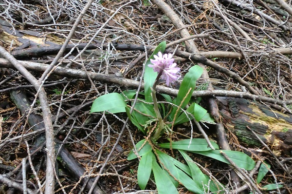 | ショウジョウバカマ 猩々袴 （撮影５月２日） 古典書物に記された、中国の伝説上の猿（猩々）が袴をはいているとこからきたという説。 猩々は人の言葉を理解し大酒のみ能における演目「猩々」でもある。 何かをこじつけないと覚えられないから、覚えるこつなのかな。 |
| 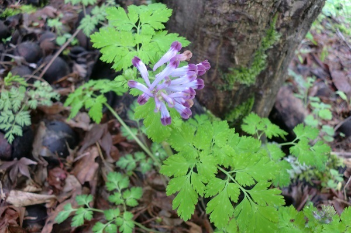 | ムラサキケマン 紫華鬘 （撮影５月３日） 仏殿を飾る華鬘（けまん）という金具に似て、それが紫色だからという名の由来。ケシ科、中国では薬草として用いられるが有毒。 |
| 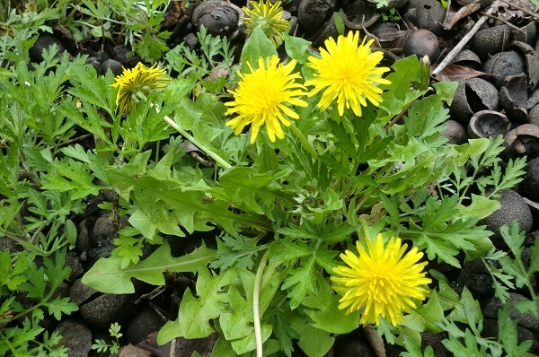 | セイヨウタンポポ西洋蒲公英 （撮影５月３日） タンポポの種類は多く、花か反り返っているのが西洋タンポホだそうだ。何処でもあるけどすべて同じタンポポに見える。間違っていたら教えて下さい。 |
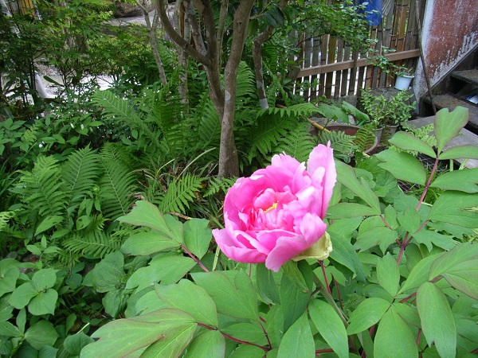 | ボタン 牡丹 （撮影５月８日） 当館築庭に咲く牡丹。花が好きだった母は、館回りの至る所に花を植えていた。今は家内が、そのときそのときの自然の花で、館内の生け花をしている。 |
| 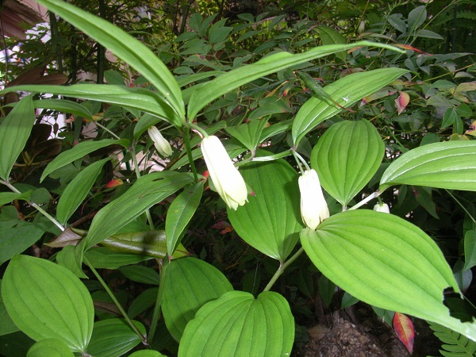 | ホウチャクソウ 宝鐸草 （撮影５月８日） 当館築山に咲いているホウチャクソウ。花が寺院の軒につるされている宝鐸（大形の風鈴）に似ているところからつけられた。ユリ科でナルコユリにもにている。 |
 |
スズラン 鈴蘭 （撮影５月８日） 当館築山に咲いているスズラン。本当に白い鈴に似ています。三段峡の冬は北海道なみの寒さ（勿論そんなに寒くないけど最低気温がマイナス１５度になったことがあります。）だから咲くのかも。谷間の湿気があるところに生えている。可愛いとも、私のようにしょぼくれているとも見える。ユリ科だけど毒があるので食べないように。 |
| 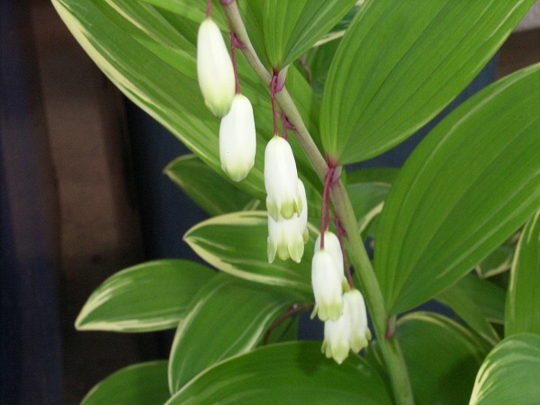 | ナルコユリ 鳴子百合 （撮影５月１１日） やはり築山に咲いているナルコユリ。ユリ科でアマドコロに似ている、アマドコロは茎が四角になっていると言われますが。よく間違います。ミヤマナルコユリ深山鳴子百合かも..自信がありません。 |
| 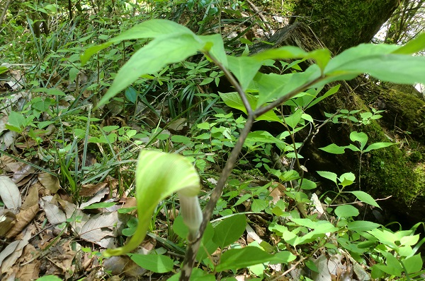 | マムシグサ 蝮草 （撮影５月１6日） マムシと言えば猛毒をもった蛇ですが、三段峡内にも沢山いますから注意が必要です。名の由来は、茎がマムシのような色をして、花先が鎌首をもたげているようだからそうですが花がかわいそうではありませんか。私にはお辞儀をしているように見えるんだけど。 |
| 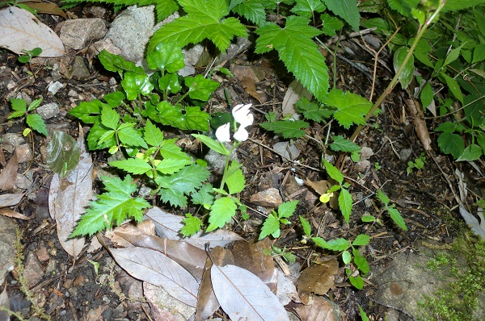 | ユウシュンラン 祐舜蘭 （撮影５月１6日） 中央の白い小さな花がユウシュンラン。ラン科、名前の由来は植物学者の名。小さくて手のひらの半分くらい、食べてしまいたいほど。実際に食らべれるランはいろいろあるけどね。 |
| 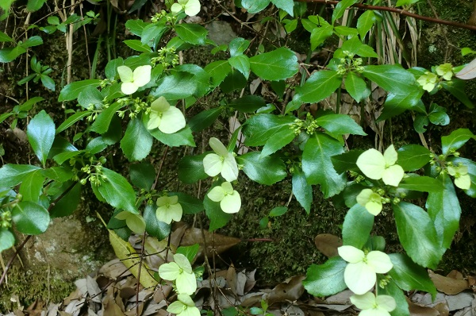 | コガクウツギ 小額空木 （撮影５月１７日） アジサイ属、アジサイに似ている花はたくさんあって、あーこれもアジサイの一種かなと最初は思ってしまう。でも三段峡の道端に多いのは此のコガクウツギである。 |
| 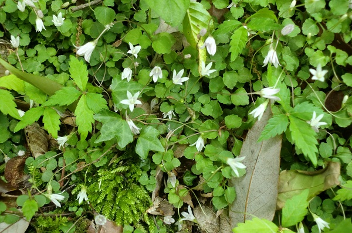 | タニギキョウ 谷桔梗 （撮影５月１７日） 遊歩道のそばによく生えています。ちっちゃくて可愛いです。キキヨウ科だけど、あのキキョウに比べたらガリバーのリリパットだね。 |
| 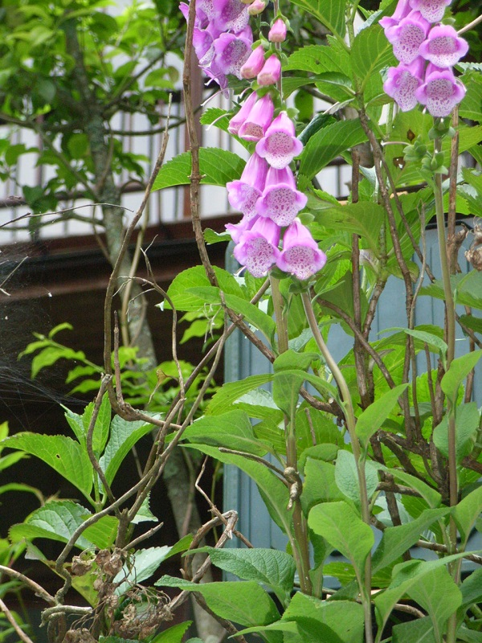 | ｼﾞｷﾀﾘｽ （撮影6月７日） どういう訳か裏庭にジキタリスが咲いている。ジキタリスは毒があると聞いている。調べてみる昔は強心薬であったらしい。植えた訳ではないのだけれど。カメムシ退治の毒であって欲しい。 |
| 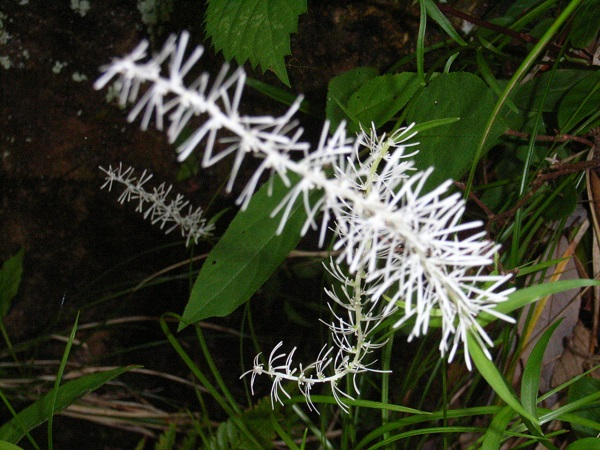 | ｼﾗｲﾄｿｳ 白糸草 （撮影6月７日） 白い糸というより、花をよく見ると保育瓶を洗うブラシのように見える。子供を育てるとき優しく洗ったブラシ、そんなことを思い出しながら見ると優しくなれるシライトソウ。群生している。シライトソウが生えるともうすぐ蛍の季節になります。 |
 |
ｺﾅｽﾋﾞ （撮影6月11日） 実がナスの実ににているから小さいナスというコナスビと名が付けられたそうです。花自体も実に小さく見落としがちであるが黄色が目立っているので覗いて見たくなる。 |
 |
ｳﾂｷﾞ 空木 （撮影6月11日） 幹の中心がからになっているところから空木と名づけらけた。別名卯月の花（うずきのはな）で旧暦の４月咲く花。太陽暦だと三段峡の今頃。 |
 |
ガンピ 雁皮 （撮影6月11日） 樹皮は製紙の原料になる。別名カミノキ。樹皮はサクラに似て、花は黄色で筒状になっている。 |
 |
ｳﾘﾉｷ 瓜の木 （撮影6月11日） 中国でこのような提灯を見たことは無いですか。この花みたら忘れられないですよね。葉にも特徴があります。雄滝の近くに行ったら見つけて下さい。食べ物の瓜を連想するが葉の形が瓜の葉の形に似ているところからこの名がついた |
| 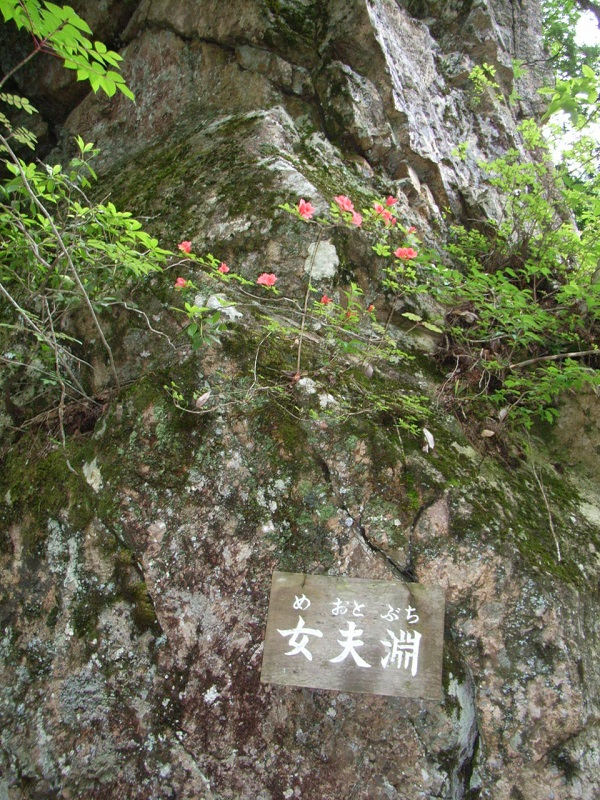 | コバノミツバツツジ 小葉の三葉躑躅 （撮影6月7日） こうゆう場所で命からがらに小さく生えているけなげなコバノミツバツツジ。自然環境の厳しさを物語っている。 |
 |
キンシバイ 金糸梅 （撮影７月15日） 当館裏庭に咲いているキンシバイ。 目隠しとして植えたものかもわからない。なんぱうても増えます。中国原産。 |
 |
ヤマアジサイ 山紫陽花 （撮影７月15日） ユキノシタ科アジサイ属 淡紫色の装飾花をもつ。 アジサイに似た花は多くありますねぇ。ウツギにも似ていますし**。 |
 |
ナンゴクウラシマソウ 南国浦島草 （撮影６月1６日） あまり見かけないけど、いつも同じ場所にある。しかしいつもタイミングが悪くて足下に咲く花になかなか出会えない。マムシ草のような花が咲く。サトイモ科テンナンショウ属 |
| 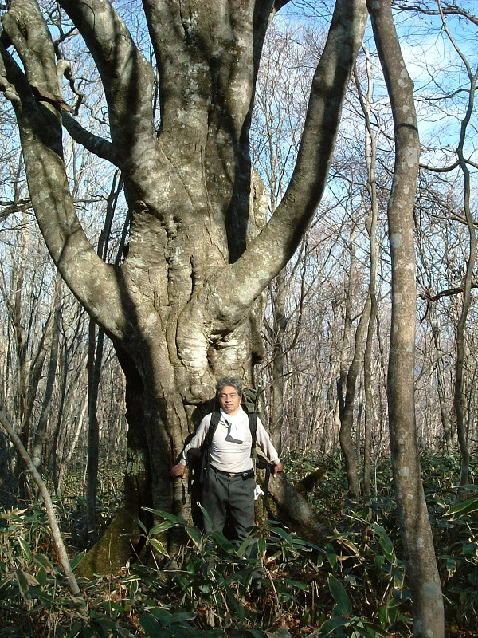 |
|